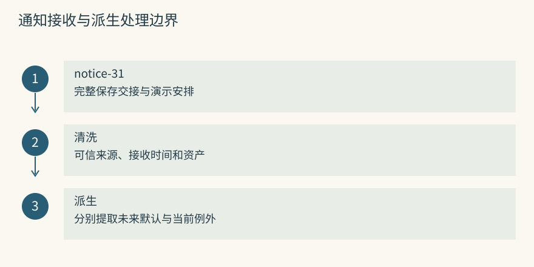
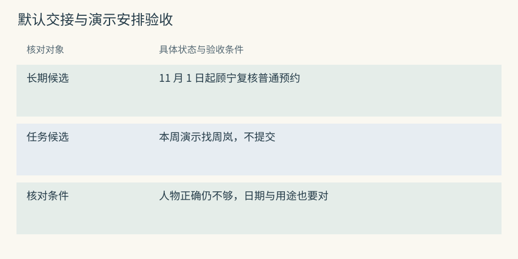
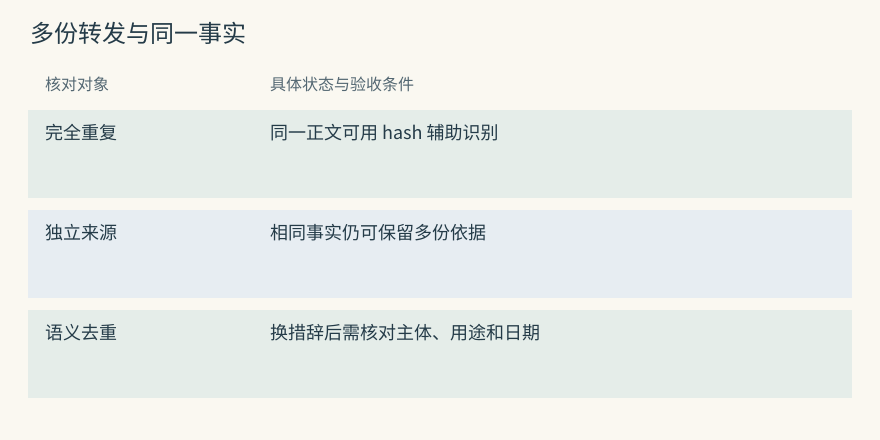
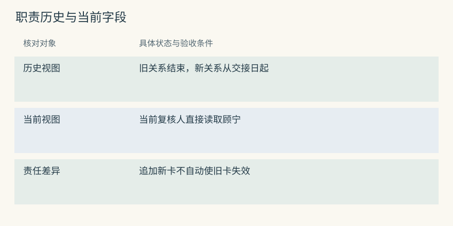
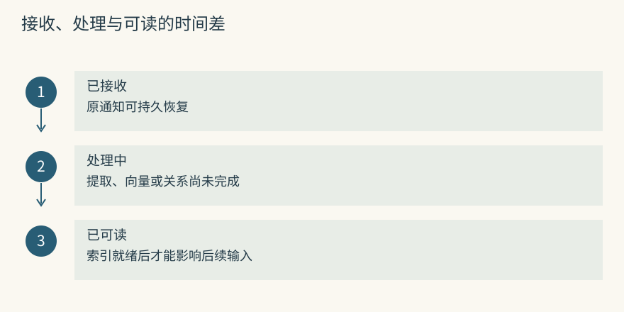
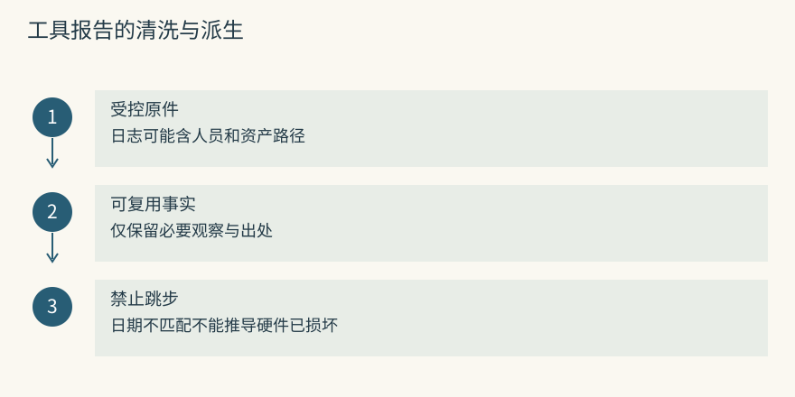
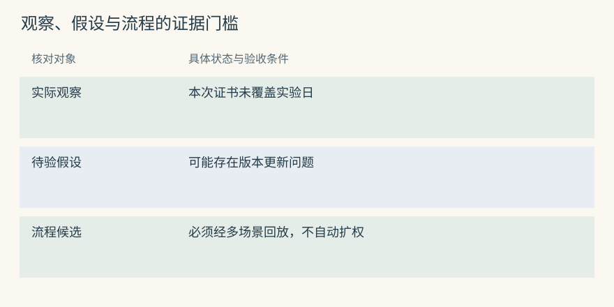
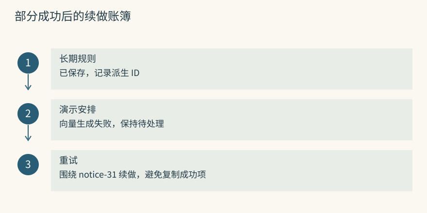
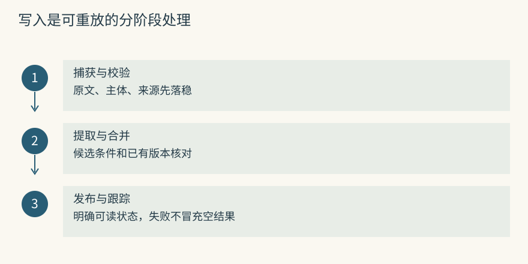

写入管线：什么值得记
先别急着总结，把原话留住
S7 的预约原来由周岚复核。仪器室今天通知：“从下月起，预约复核交给顾宁；本周的教学演示仍找周岚。”如果只留下“找周岚”，长期交接丢了；如果只留下“改顾宁”，本周演示又会被送错人。接收时应先保存整份清洗后的通知及来源，而不是立刻只存一个姓名。
原事件至少带收到时间、可信来源、涉及的资产和原文。它为提取失败、日期歧义和后续纠正留下重放依据。比如“下月”要按通知的参考日期解释，不能按三天后后台重试的日期重新计算。写入管线的每一步都可能改变表达，因此原文是核对这些变化的起点。
给 Mem0 的通知可能在提取阶段失败，尚未写入内部消息历史；给 Graphiti 的通知也可能只建立了内存对象，尚未持久化。要求不丢输入时，入口必须先在自己的事件存储确认接收。SDK 调用成功与业务事件接收成功，不宜用同一个状态表示。
源码与边界（选读）

教学事件 notice-31 在入口先写为 received，再交给派生处理。若模型超时，原文仍在，状态改为 retryable；若确实没有新事实，也应记为已处理但无新增。两类结果都可能没有事实输出，区别在于是否完成了处理。
Mem0：消息保存在提取流程的收尾阶段
正常流程使用 self.db.save_messages() 保存消息，包括没有提取到新增事实的情况。但 LLM 调用异常会抛出 LLMError，可能根本没有到达这一收尾。内部近期消息存储因此不能当作入口先写日志的保证。
外层可以先保存 notice-31，记录提取器版本和参考日期，再调用 add()。失败后依据同一事件重试，避免临时拼接一段缺少“本周”的摘要。消息原件应按隐私和保留策略保存，不需要连同可识别个人的无关字段永久留存。
Graphiti：建立 episode 对象不等于已经落库
add_episode() 在处理早期创建带内容、来源说明、系统时间和参考时间的 episode 对象，之后做抽取与解析，再由 _process_episode_data() 等路径保存。对象已经有 UUID，并不能证明图后端已经能读到它。
外层事件与最终 episode UUID 应建立映射。发生异常时先查处理状态和实际对象，再决定重试。只看到日志写了“created episode”，就告诉用户新复核规则可查询，会把内存进度误报成可见状态。
提取：把长期变更和本次例外拆开
假设通知发于 10 月 26 日，参考时区为学校当地时区。期望提取器提出以下两项候选，而不是“周岚和顾宁都负责预约”：
长期候选：11 月 1 日起，S7 普通预约复核人为顾宁。
任务候选：本周教学演示由周岚对接，不提交正式预约。第一项改变未来默认，第二项限定任务和日期。审核时应检查“普通预约”“教学演示”和起始日，不仅检查两个人名是否正确。日期若只有“本周”，应用应保留解释依据；星期边界未明确时可以请求核实，而不是悄悄按服务器时区决定。
Mem0 的候选可以写成两条有条件的短事实，应用给单次安排附任务范围。Graphiti 可以用长期职责关系和演示任务关系分别表达。表达结构不同，共同要求是保留限定词；同一段原文中的两句话并不天然互相冲突。
源码与边界（选读）

可以在接受前逐项核验：主体是不是 S7、职责是不是预约复核、生效日是不是下月第一日、演示是否仍有独立对接人。让候选先停留在可审核状态，比错误规则直接影响下一轮要容易恢复。
Mem0：一次提取同时参考旧事实与近期消息
generate_additive_extraction_prompt() 组合本次消息、近期消息、召回的旧事实和自定义指令。已有 UUID 会映射为短整数标签提供给提示，减少模型凭空生成长 ID 的机会。输出解析目标是 memory 列表里的 text。
当前普通路径提出新增事实，不能根据旧注释或早期教程认定它仍自动执行 UPDATE 和 DELETE。原库里的周岚记录可能继续存在；即使提取出了正确的顾宁候选，当前视图如何切换仍需明确的变更机制。
Graphiti：先抽对象，再抽对象间的限定关系
实体抽取和解析先给 S7、顾宁、周岚及任务确定规范端点，关系抽取再结合前序 episode 和 reference_time 理解相对日期。可以通过 custom_extraction_instructions 强调区分日常职责和教学演示，但不应把提示当成保证。
验收实际关系时，检查它是否把两个姓名都连为永久复核人，或把演示关系误用于长期默认。JSON 解析通过只说明数据形状可读取；限定范围错了仍是写入缺陷，应回到原事件重做或纠正。
去重：重复文字和重复意思是两件事
通知可能被邮箱、聊天群和工单各转发一次。三份材料都说“11 月起顾宁负责 S7 预约复核”，可以保留三个来源，但不宜让输入里出现三条几乎一样的要求。要分清同一事件重复采集、不同事件重复陈述、同义事实三类重复。
文本 hash 可以快速识别完全相同正文。把“负责 S7 预约复核”换成“审核 S7 的预约”，hash 一般就不同。语义去重则通常先召回相似记录，再判断是不是相同主体、同种职责、同一有效期。如果候选检索没找到旧关系，判别器再强也无从比较。
Mem0 的局部 hash 去重和提取器参照旧事实能减少重复，但不能保证全库唯一。Graphiti 可以比较端点、事实文本和时间，并将重复关系的来源汇聚。不同来源是否独立仍要另外检查，群里的转发不能作为第二次独立确认。
源码与边界（选读）

重复判断应写明比较单位。事件 ID 相同表示同一输入重送；正文 hash 相同表示字节规范化后的文本重复；关系同义需要检查端点和范围。不要用一个重复率把这些操作混在一起。
Mem0：hash 去重的边界是本批次与召回旧记录
实现对候选正文计算 MD5，使用 seen_hashes 避免本批重复，使用 existing_hashes 对比本次看见的旧记录。没有被召回的库内记录不在这一比较集合，因此完全相同的正文也可能在别处继续存在。
同义表达产生不同 hash。提取器若看见了相关旧事实，有机会不再提出它，但观察范围仍有限。验证时可以把旧事实放在低排名位置，检查它是否进入提取参考，再解释重复为何出现，不能只归因于模型没有理解同义词。
Graphiti：先精确去重，再比较关系候选
resolve_extracted_edges() 先按源 UUID、目标 UUID 和规范化 fact 去除本批完全重复，再查询端点间已有边及相关候选，交给模型解析重复或变化。两个人名不同通常不是重复，两份通知日期不同也可能表达交接。
候选检索和解析都是成本与错误点。核对时既看复用的 UUID，也看新增来源是否保留。模型若把北校区与南校区 S7 的相似职责合成同一边，会破坏身份隔离，而不只是多出或少出一条记录。
变化：保留旧事实，还是修改当前视图
复核职责交接可以用两种视图表示。历史视图保留周岚截至 11 月 1 日之前的职责，新关系从该日开始；当前画像可以直接把复核人改成顾宁，并另记来源和变更日志。前者便于回答十月的申请为什么找周岚，后者让当前查询更直接。
追加一条新事实不等于旧事实自动退出。Mem0 普通写入偏向新增，读取方仍要识别当前版本。Memobase 的属性合并可能直接改变当前画像，错误合并也会很快传播。Graphiti 对关系维护时间区间，但仍需要先正确理解这是长期交接而非一周代班。
如果通知只是“顾宁帮忙复核本周三场演示”，就不能结束周岚的长期职责。保存技术越复杂，越需要输入带清楚的范围，否则自动冲突处理可能把原本兼容的两项安排强行改成先后状态。
源码与边界（选读）

应同时列出“新值已经保存”和“旧值是否还在当前结果里”。只统计新增顾宁记录的数量，会漏掉周岚仍被当成当前复核人的情况。测试应跨越交接日前后各问一次。
Mem0：自动追加与显式更新是两条路径
普通 add() 可以保留交接陈述，旧卡不因此自动关闭。应用可在确认后显式 update() 维护一份当前值，也可在外层保存版本和有效日，再按查询时点选择。metadata 写了 supersedes 并不意味着库执行了替代。
历史库的 UPDATE 前后正文说明系统修改，不能单独代替现实职责区间。10 月 26 日收到 11 月 1 日生效的通知，updated_at 是处理时间；拿它直接做交接日，会提前改变十月的答案。
Graphiti：重复与失效结果分开返回
解析结果区分 resolved_edges、invalidated_edges 和 new_edges。重复可能沿用原 UUID，状态变化可能结束旧边，摘要更新使用新增边。接口“有新边”不足以证明旧区间正确关闭。
应核对旧职责的 invalid_at 与新职责的 valid_at 是否一致，还要查看演示任务是否保留周岚这一例外。若错误结束了无关职责，修正新边本身并不能消除所有影响，还需检查旧边和摘要。
为什么有些项目没有马上处理
接收通知只需写一份原事件，模型提取和关系解析可能慢得多。若把全部工作放在回复前，用户等待会增加；若先接收再后台处理，新规则又可能短时间不可读。热路径与冷路径是延迟和可见性安排，不能只用同步、异步两个词概括。
Memobase 把输入放入 buffer，再通过阈值、空闲或显式 flush 整理；MemoryOS 按近期容量和热度组织页面及长期知识；MemOS scheduler 安排后台任务。触发条件不同，失败后的恢复点也不同。应用应分别显示原文已接收、派生处理中、可读完成或失败。
在整理尚未完成时，本轮模型仍应看到用户刚发来的纠正。比如当前通知说演示找周岚，旧画像读到的却是顾宁，不能因为画像来自数据库就忽略眼前的任务例外。长期整理的最终一致性不应造成当前回答故意使用旧信息。
源码与边界（选读）

Async 让等待期间可以执行其他协程，不保证请求已经转交给耐进程退出的工作队列。演示时应区分一个进程中的并发与可恢复后台任务。只有任务和状态先持久化，重启后才有明确的续做依据。
Mem0：AsyncMemory 没有替应用建立持久队列
异步 API 仍需完成模型请求、向量和存储等工作。调用者不等待或进程退出，并不会自动得到另一个可靠 worker。若要将提取移出回复路径，应由应用提供持久队列和任务状态。
队列里的 notice-31 可以有接收时间、尝试次数和结果映射。当前消息直接进入本轮输入，后台负责长期整理。处理失败要可见，不能让“通知收到”永远表现为“规则已生效”。
Graphiti：单个 episode 内并行，关联 episode 仍需有序
实现对部分抽取、向量生成等工作使用异步任务，但相关材料的提交仍应按建议顺序等待。交接通知依赖先前实体和职责，乱序可能改变解析上下文。不能从异步函数名推断任意输入顺序都得到同样的图。
相互独立的 group 可以按隔离范围组织并发，相关事件则保留顺序和完成状态。若通知乙说明“更正上一条”，应保证它引用的前件已经处理或明确一起重放。
文件和工具事件怎样进入这条管线
校准工具输出可能有长日志、资产路径和人员信息。捕获时可以保存受控原件，进入长期记忆前再挑出可复用事实，例如“证书日期不能覆盖申请日”，并去掉不需要的个人字段。清洗不是把原观察改写成根因：工具返回日期不匹配，并未证明校准硬件损坏。
Basic Memory 从明确写入的 Markdown 解析观察和关系，Letta Code 允许 Agent 编辑文件并让已提交修订影响以后输入。这类路径不必对每条消息调用事实提取。Beacon 可以提供工具事件，但形成教训仍需下游。Hermes 主要判别已有候选，并不承担长期采集和保存。
Mem0 的直接保存可接收已经审核的简短观察。Graphiti 收到工具报告时通常仍会抽取实体和关系，应限制不必要的对象。完整日志是否保留、谁能回查、何时清理，都应在记忆库之外或之内有明确责任。
源码与边界（选读）

教学报告包含资产号、证书编号、到期日和诊断文本。可供预约使用的是日期与资产对应关系；内部账户路径不需要进入每次输入。保留稳定源事件 ID，能在争议时返回受控原件，而不必把整份日志公开给回答模型。
Mem0：infer=False 适合已经审核的文本
infer=False 跳过事实提取，逐条保存非 system 消息，并保留 role 和可选 actor 等信息，仍生成 embedding。它适合应用已经整理好的“本次证书截止日早于实验日”这种观察，但不会自动清洗正文中的敏感内容。
因此审核、脱敏和资产核验应先完成。直接保存的身份、来源和适用范围也要明确；否则省去提取只会更快地存入错误或过宽的断言。
Graphiti：文件与工具输出可作为 episode 材料
episode_body 可承载文本，source 区分消息、文本或 JSON 等类型，source_description 说明来源。类型声明帮助解释材料形态，并不证明每一行都值得建成实体。
校准报告中的堆栈和路径可能导致无用节点。可通过 schema 和提取指令限制关注仪器、证书和有效日期，再对照原报告核验结果。若只是文本已提交而关系尚未保存，应仍报告处理中。
怎样判断一句话值得长期保存
“今天演示预约页面”决定当前工作，却不一定在未来有复用价值。“证书必须覆盖实验日”则能改变下一次提交检查。判断长期价值时，可以尝试给出一个具体的未来决策：缺少它会不会选错人员、漏查日期、错误提交，还是只少了一段闲聊背景。
暂时无法指出复用场景的内容，可以先留在原始历史，不急着提升到常规召回。这样仍可审计，又减少候选噪音。重要事件也不必全部变成永久流程，比如一次网络超时可供排障，但不足以支持“任何退回都重试三次”。
根因猜测应更谨慎。管理员怀疑证书版本缓存过旧，刷新页面后申请通过，这不足以证明缓存是唯一原因。可能服务状态、资产选择或时间条件同时发生变化。可以保存观察和待核验假设，等有独立证据再形成稳定教训。
Mem0 的提取器可以提出短事实，应用需要拒绝把“可能”删掉的候选。Graphiti 可以保存报告关系和材料来源，但“能画成边”不代表值得用于每次预约。输入筛选和类型设计同样参与长期价值控制。
源码与边界（选读）

可把候选分为实际观察、来源报告、模型推断和待审流程。分类不是真实性判决，而是让读取者知道该怎样使用。未经证实的缓存猜测可以触发检查，不应自动触发清理或重启服务。
Mem0：新增事实的选择发生在模型提示里
普通路径的提取提示负责筛选有用陈述，没有一个自动依据真实预约结果验证每条价值的审核器。应用可先筛掉闲聊和敏感信息，再要求保留不确定程度和日期条件，并抽样核对结果。
在 metadata 写上重要性只是保存一个字段，除非读取逻辑真的用它，否则不会改变排序。即使用于排序，也应与真实性分开：一条严重但未确认的风险可以很重要，却仍不能表述成已确定故障。
Graphiti：能成为关系不意味着值得常规召回
临时任务可以产生大量节点和边，模型顺利抽取不代表这些连接以后都有价值。诸如“今天展示了预约按钮”的关系可能占据邻域，却不帮助正式预约。无用高连接节点还可能扩大扩展噪音。
应用可以限定类型和材料入口，将公开规程与临时 UI 演示分开。来源和时间便于核验，不能代替复用价值判断；将猜测提升为强制检查仍需业务依据。
写入失败后，怎样安全地再试一次
通知产生两个派生结果：长期交接规则和本周演示安排。若第一条已保存，第二条在生成向量时失败，整批重新提取可能再生成第一条。新 ID 和新来源看起来像第二次确认，实际上只是同一输入重试。
幂等要围绕业务事件定义：重复处理 notice-31 不应产生额外业务结果。它不同于语义去重，因为两份独立通知说同样事实，仍可以各自成为来源。应用可以记录事件、候选、派生 ID 和阶段状态，在重试前检查哪些结果已经存在，再补做缺失项。
状态也不宜过于乐观。收到任务、开始处理、结果可读是三种时刻。若只返回“保存成功”而没有核对事实、历史和链接，部分失败会隐藏很久。当前任务可以直接使用原通知，长期管线则要有失败队列和可恢复路径。
源码与边界（选读）

教学状态表中，候选 K1 已写入事实，K2 尚未完成向量。重试时先查 K1 的保存对象和历史，再重做 K2。不要因接口返回了构造好的两个结果，就推定两个后端已经一致。
Mem0：批量回退可能产生部分成功
批量 embedding 失败后可以逐条尝试，批量插入和历史操作也存在逐项回退。某些失败被记录后继续流程，而返回记录来自构造的 records。因此调用方应按 ID 验证实际事实、历史和实体链接状态。
稳定源事件与派生 ID 映射是重试依据。它能区别“没有新内容”“有内容但没写齐”“返回前进程中断”。不要用重新生成所有随机 ID 的方式假装完成恢复，这会增加重复并让证据次数失真。
Graphiti：uuid 参数不能直接当作任意幂等创建键
当前 add_episode(uuid=...) 会读取已有 episode，而非直接用一个任意新 UUID 创建全部对象。传入外层事件 ID 并不自动实现幂等创建；不存在的 UUID 还可能使读取失败。
应用应维护外层事件到 episode 的映射，查询保存结果和处理阶段。重试还涉及旧边失效和摘要更新，不能只查材料节点是否存在。对严重部分失败，可以按原事件重建受影响视图，并验证历史关系没有被多次错误关闭。
动手检查
三条通知依次是“预约默认找周岚”“周三演示找顾宁”“11 月起预约改顾宁”。请写出每条应影响的当前字段、任务字段和历史区间。再设第三条写入中断，列出重试前必须查的对象。
答案提示：第二条不支持关闭长期职责，第三条才支持交接；接收时间与 11 月生效时间分开。恢复时核对原事件、已存候选、旧关系状态和派生摘要，不能只重发原文或只数新增记录。
实现笔记与源码对照（选读）
写入验收应检查条件保真和恢复行为。一个全是过宽断言的库，即便检索每次都命中，也只会更稳定地返回错误要求。
热路径与冷路径
明确的本次安排可以直接留在当前输入，原事件在入口持久化。复杂的去重、关系解析、画像合并和流程候选生成则可交后台。用户等待的代价减少了，应用也必须承担可见延迟和失败恢复。
接收事务：清洗后的通知 + 参考日期 + 稳定事件 ID
当前交互：使用通知里的明确安排，不等长期整理
后台派生：候选提取、范围核验、查重、变更、索引
完成校验：按事件 ID 读回结果，发布可读状态Memobase buffer、MemOS 调度和 Hippo sleep 等代表不同后台处理点。不能将“冷路径”统一解释成会话结束才执行，也不能认为后台就无须限制模型成本和任务积压。
一次可靠写入
入口保存的是发生过的输入，提取提出的是可接受或拒绝的候选，审核负责它是否保留原意，变更负责它怎样影响旧状态。把这几个阶段分开，才能在某次模型换版后重跑派生，而不篡改原事件。
处理日志可记录事件 ID、参考时区、提取器版本、候选正文、匹配旧 ID、接受理由和实际写入对象。规范化要把“下月”“他”“那台仪器”变成可核验的日期与主体，无法确定时保留不确定状态。最终完成状态要来自读回校验，而非仅来自请求已发出。
用一条矛盾记录走完写入路径
旧通知写周岚，新通知写顾宁，先别立刻选择姓名。核对是否同一资产、同一种职责、同一时间范围；随后看新通知是在接任、代班，还是纠正原错误。只有长期交接才适合结束旧职责区间。
| 判断 | 本例处理 | 应保留的解释 |
|---|---|---|
| 11 月 1 日正式交接 | 新职责开始、旧职责结束 | 周岚十月曾负责 |
| 本周演示临时对接 | 新建任务安排 | 普通预约职责不变 |
| 旧通知写错人名 | 纠正派生事实 | 错误来自哪份材料 |
| 两份通知说法不一 | 暂存分歧并核实 | 各自来源和适用范围 |
原文保留也受数据政策限制。需要删除时，审计不能成为无限期保留私人信息的借口，可根据政策保留必要的脱敏操作记录而清除实际正文。
这些步骤在项目里如何执行
Mem0 用近期消息和相关旧事实做批量新增提取，再生成向量、hash 和实体链接；观察窗口有限，默认追加不负责关闭全部旧状态。Memobase 将输入累积到 buffer，flush 时更新属性与事件，因此写后立即读取可能仍是旧画像。
Graphiti 从 episode 出发，先解析身份，再比较关系重复与变化。它需要同时验收端点和有效时间。Cognee 则按输入和配置走加载、分块、schema 及多存储处理；HippoRAG 的文档索引形成三元组和来源图，目标更偏向多跳资料到达，而不是即时个人偏好。
MemoryOS 通过容量触发页面组织与主题合并，热度再触发长期分析。A-MEM 生成新笔记描述并修改邻居属性，内容可能不减少，但读取路径已经变了。Hippo 通过 sleep 等机制处理重复和价值，MemOS 调度选定后端，TencentDB 从会话生成层级内容并留下生成日志。每条路线都要检查实际中间状态。
Basic 与 MCP 主要接收客户端明确提交的内容，不能统称为每轮自动模型提取。Beacon 捕获事件，Letta 提交记忆文件后影响未来编译，Hermes 不承担长期事实写入。相关细节见 原生记忆、事实画像、图谱、分层系统、接入 和 判别。
ADD-only 还是 CRUD
追加降低了写入时直接破坏旧知识的风险，却把一部分当前值选择责任推给读取器。多条复核人卡片同时存在时，按相关分数拿第一条并不构成版本治理。显式合并或更新便于当前读取，但错误覆盖可能破坏历史，需要来源和变更日志。
当前本地 Mem0 普通 _add_to_vector_store() 是单次 ADD-only 批量提取，不能套早期模型输出 ADD/UPDATE/DELETE 的流程图。托管 README 的算法与成绩也不能直接当成本地 SDK 结果。对于高风险职责事实，可采用追加并维护有效版本；可重建的摘要可覆盖刷新；隐私删除则要清除对应副本而非仅追加一条“已删除”。
何时升级为 Skill
一条通知只能支持事实，一段成功演示也不足以支持通用预约流程。可复用技能还需明确输入、触发、工具、停止条件和验收，尤其要区分查询时段与提交申请。证书不合格时应该停止，而不是把重试当成恢复所有错误的方法。
可以先从重复、可验证的轨迹整理候选，再用普通预约、教学演示、证书过期和无权限四组输入回放，最后人工审核后发布版本。Letta、TencentDB 和 MemOS 的技能组织方式各异，目录或标签本身不能代替这些门槛。
同样的去重，为什么会得出不同结果
文本 hash 看字面，画像合并看属性当前值，关系解析看端点、语义与时间。对于“复核顾宁”与“顾宁审核预约”，hash 可能保留两条，属性合并可能变成一个字段；对于“一次演示找顾宁”，属性合并若误泛化，长期值就被损坏。
TencentDB 的 L1 去重实现 先召回旧候选，再批量判断新旧动作。优先原生 hybrid，否则使用全文与客户端向量并按 RRF 合并。写入去重可限定同 session，不能直接套用跨会话读取范围；没有候选时直接 store，也不能据成功响应认定完成了全库语义去重。
MemoryOS 合并主题 session 不是证明页面事实重复，A-MEM 修改邻居描述不是删除同义原文。Hippo 与 MCP 的集中巩固能看到更广的历史，却可能把一次性例外压掉。文件提交检查格式，事件 ID 去重处理重复采集，这些操作都应有各自标注和测试，不能拿一个去重成功率通用验收。

项目对照速查（选读）
本章对照结论
| 项目 | 本章应追的处理点 | 不能省略的验收 |
|---|---|---|
| Mem0 | 普通新增、直接保存、局部 hash 检查 | 事实与历史是否写齐 |
| Memobase | buffer 到 flush 的属性整合 | 纠正何时可读 |
| Graphiti | episode 到实体和关系解析 | 身份、日期和旧边状态 |
| Cognee | 加载路线及多后端处理 | 管线中断恢复 |
| HippoRAG | 新 passage 的事实和来源索引 | 关键连接是否抽到 |
| MemoryOS | 容量触发页面与热度提升 | 例外是否在摘要中保留 |
| MemOS | reader、后端和调度任务 | 完成状态与积压 |
| Hippo | 捕获与 sleep 的分工 | 原经历能否回查 |
| A-MEM | 新描述、links 与邻居改动 | 派生属性及索引一致 |
| Letta Code | 编辑、提交、后续编译 | 当前与未来输入分开 |
| Basic Memory | 文件解析和同步 | 路径、链接及编辑冲突 |
| MCP Memory Service | 客户端保存与集中治理 | 接收不等于筛选有价值 |
| Agent Beacon | 同一动作的归一捕获 | 漏采、重复采集和敏感字段 |
| TencentDB | L0 保存、候选去重和层级生成 | 去重范围与读取范围区别 |
| Hermes Jev Skills | 小决策缓存 | 不当成长久事实提取 |
| MemGPT / 历史 Letta | 模型触发记忆写工具 | 历史协议依赖宿主执行 |